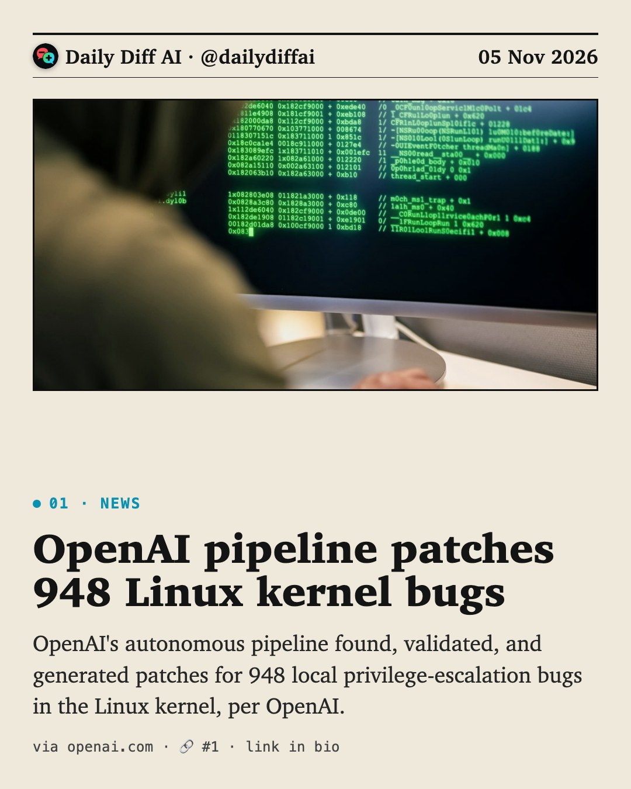
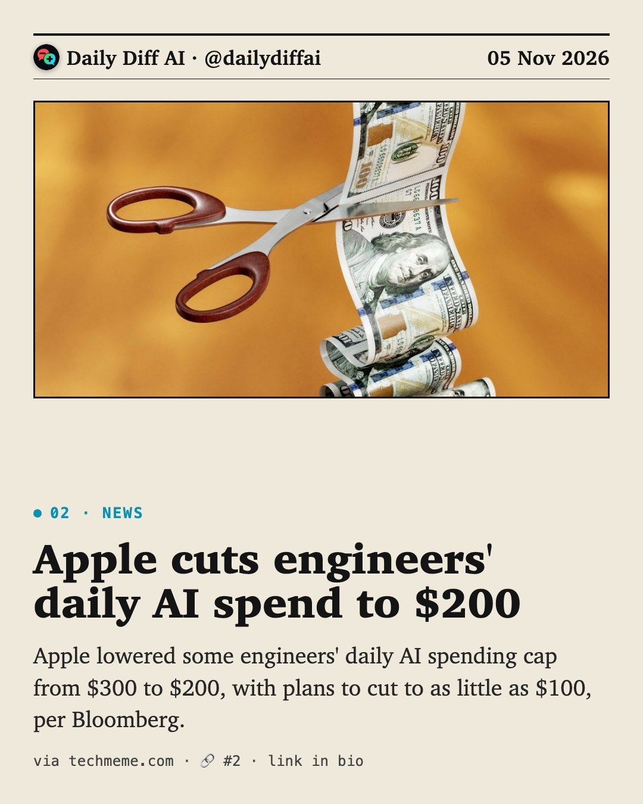
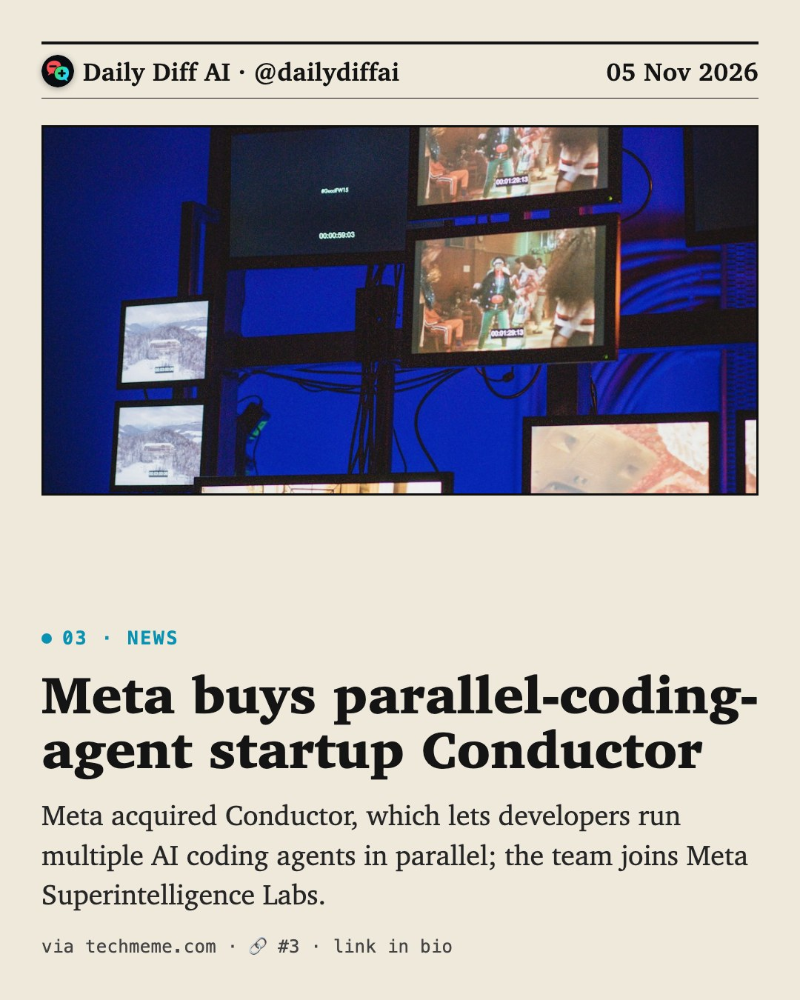
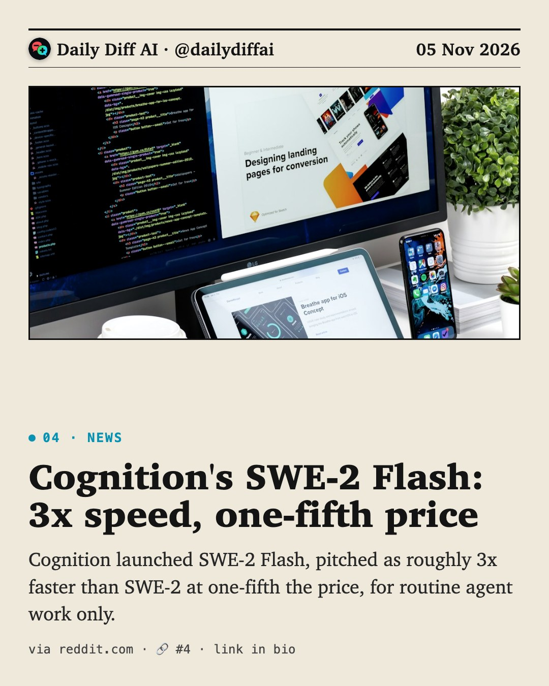
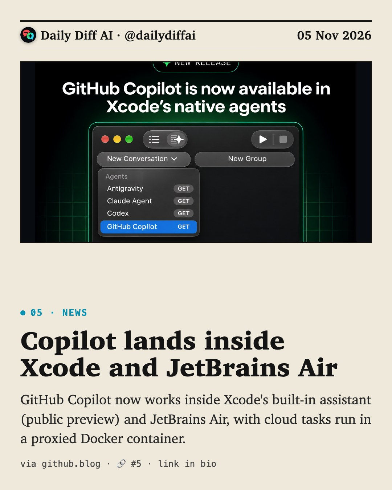
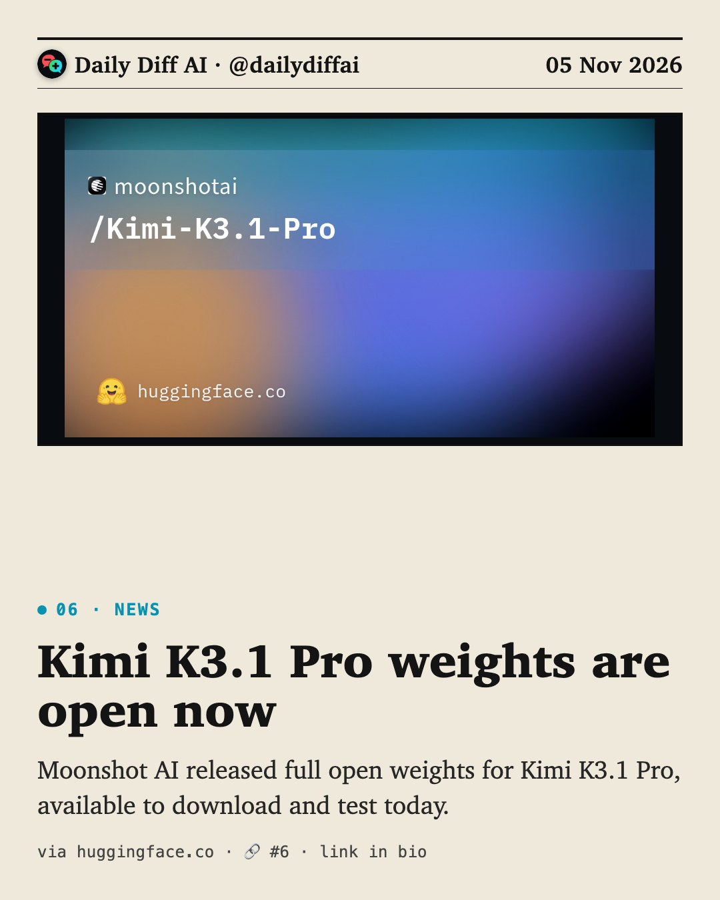
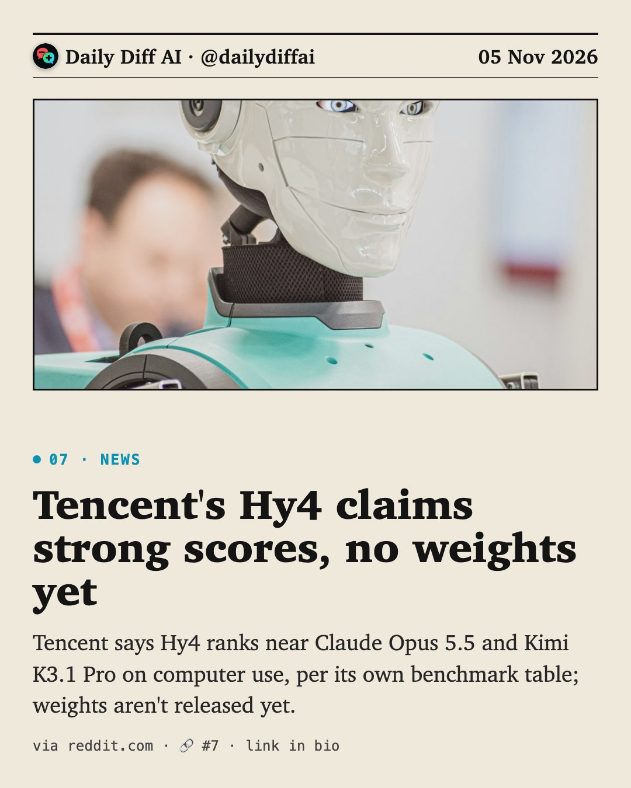
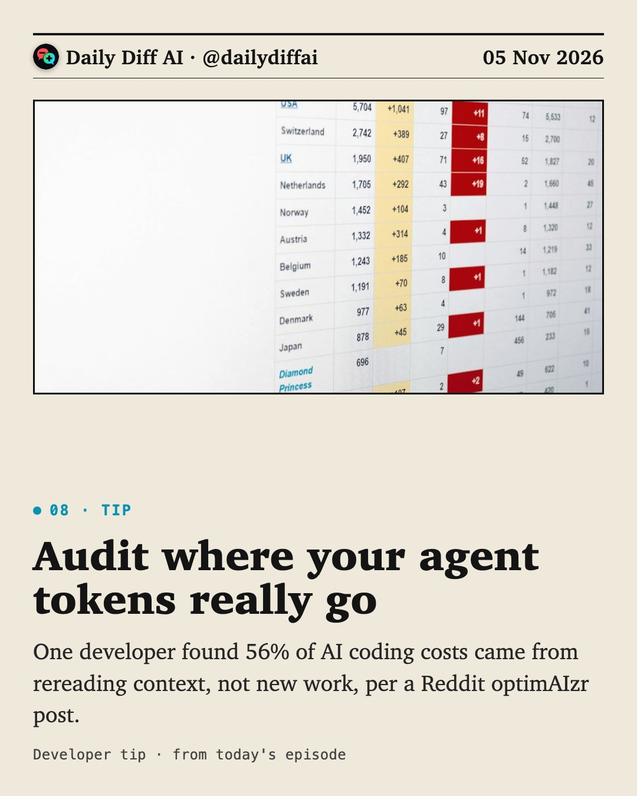

Daily Diff AI

OpenAI pipeline patches 948 Linux kernel bugs
OpenAI's autonomous pipeline found, validated, and generated patches for 948 local privilege-escalation bugs in the Linux kernel, per OpenAI.
Read on openai.com →
Apple cuts engineers' daily AI spend to $200
Apple lowered some engineers' daily AI spending cap from $300 to $200, with plans to cut to as little as $100, per Bloomberg.
Read on techmeme.com →
Meta buys parallel-coding-agent startup Conductor
Meta acquired Conductor, which lets developers run multiple AI coding agents in parallel; the team joins Meta Superintelligence Labs.
Read on techmeme.com →
Cognition's SWE-2 Flash: 3x speed, one-fifth price
Cognition launched SWE-2 Flash, pitched as roughly 3x faster than SWE-2 at one-fifth the price, for routine agent work only.
Read on reddit.com →
Copilot lands inside Xcode and JetBrains Air
GitHub Copilot now works inside Xcode's built-in assistant (public preview) and JetBrains Air, with cloud tasks run in a proxied Docker container.
Read on github.blog →
Kimi K3.1 Pro weights are open now
Moonshot AI released full open weights for Kimi K3.1 Pro, available to download and test today.
Read on huggingface.co →
Tencent's Hy4 claims strong scores, no weights yet
Tencent says Hy4 ranks near Claude Opus 5.5 and Kimi K3.1 Pro on computer use, per its own benchmark table; weights aren't released yet.
Read on reddit.com →
Audit where your agent tokens really go
One developer found 56% of AI coding costs came from rereading context, not new work, per a Reddit optimAIzr post.

Data center stocks slide on midterm AI-capex bets
Hut 8, IREN, and Core Scientific fell double digits as investors bet a Democrat-controlled Congress slows AI capex growth.
Read on techmeme.com →
NVIDIA's Auto Ontology grounds agents in real data
Open framework builds a semantic context layer over enterprise metadata so agents stop guessing what metrics mean, per NVIDIA.
Read on github.com →